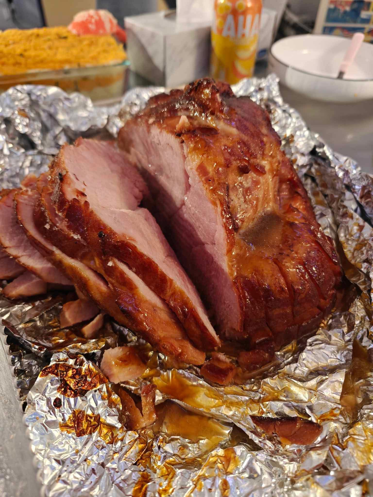
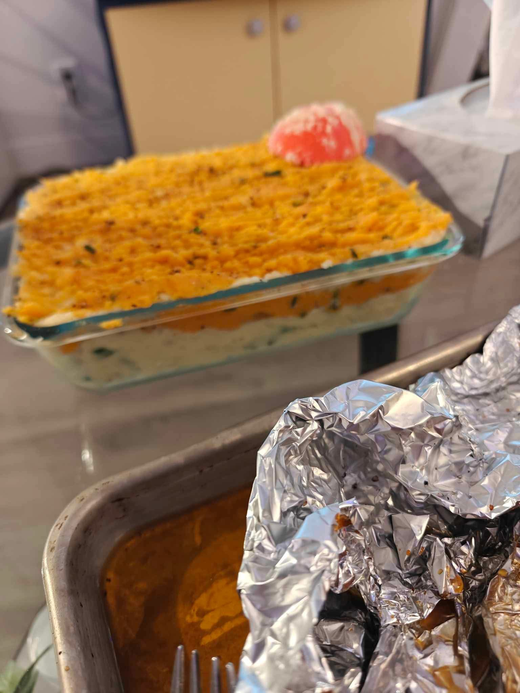
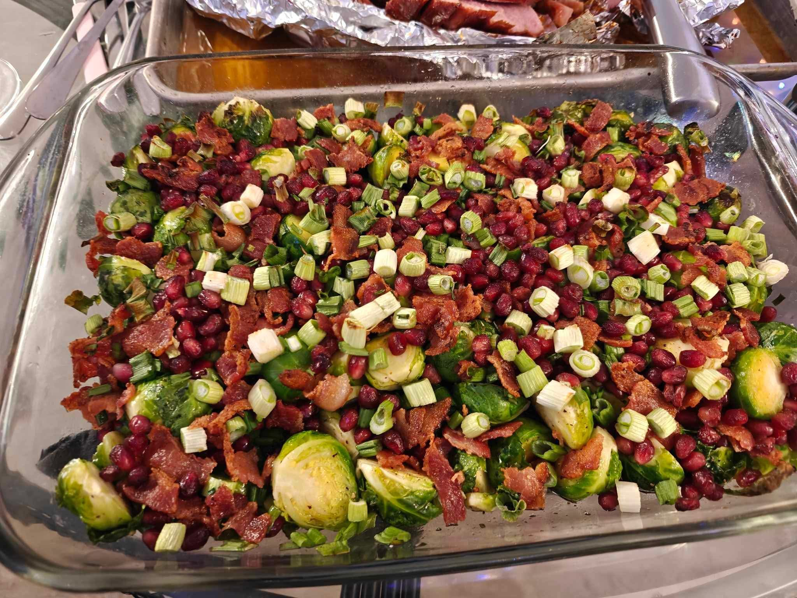
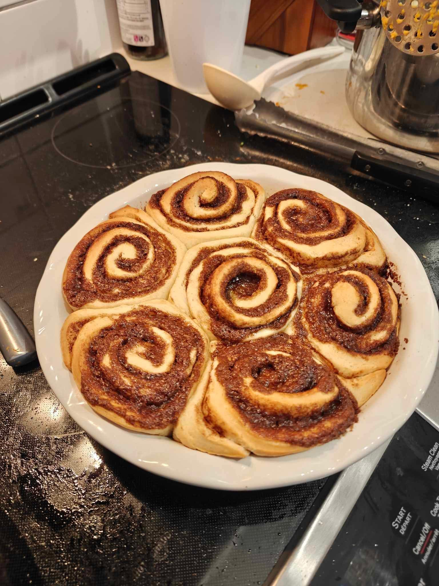

During the last week of school, my roommates and I decided to make a recipe we had never tried previously. Our menu for the night was Hickory roasted ham, Mashed potaotes, brussel sprouts and cinnamon buns! Below are the recipies for each of the meals.
Hickory roasted ham
Ingredients
- For the Ham:
- 1 (8-10 lbs) bone-in ham
- 1 cup hickory wood chips (soaked in water for 30 minutes)
- 2 tbsp olive oil
- Salt and pepper to taste
- For the Honey Glaze:
- 1 cup honey
- 1/2 cup brown sugar
- 1/4 cup Dijon mustard
- 1/4 cup apple cider vinegar
- 2 tbsp soy sauce
- 1 tsp ground cinnamon
- 1 tsp ground cloves
- 1/2 tsp ground ginger
- 1/2 tsp ground black pepper
Instructions
1. Preheat the Oven
Preheat your oven to 325°F (163°C).
2. Prepare the Ham
- Pat the ham dry with paper towels.
- Rub the ham with olive oil, salt, and pepper to season the surface.
3. Prepare the Honey Glaze
- In a saucepan over medium heat, combine the honey, brown sugar, Dijon mustard, apple cider vinegar, soy sauce, cinnamon, cloves, ginger, and black pepper.
- Stir the ingredients together and bring to a simmer.
- Let the glaze simmer for 5-7 minutes, stirring occasionally, until it thickens slightly.
4. Smoke the Ham
- Place the soaked hickory wood chips in a smoker box or directly on the grill.
- Put the ham in the smoker or on the grill over indirect heat. Smoke for 2-3 hours, basting occasionally with the honey glaze.
5. Roast the Ham
- Once the ham has been smoked, transfer it to the oven. Roast for an additional 1-1.5 hours, basting with the honey glaze every 30 minutes, until the internal temperature reaches 140°F (60°C).
6. Rest and Serve
- Remove the ham from the oven and let it rest for 15 minutes before carving.
- Serve with your favorite sides and enjoy!
Tips:
- For a crispy outer layer, increase the temperature to 400°F during the last 10 minutes of roasting.
- Leftovers can be sliced and used for sandwiches or added to soups.

Mashed Potatoes Recipe
Ingredients
- 2 pounds russet potatoes (about 4 large potatoes)
- 1/2 cup unsalted butter
- 1 cup whole milk (or heavy cream for extra richness)
- Salt, to taste
- Freshly ground black pepper, to taste
- 2 cloves garlic (optional)
- Chopped fresh parsley (optional, for garnish)
Instructions
1. Prepare the Potatoes
- Peel the potatoes and cut them into 1-inch cubes for even cooking.
- If you like garlic mashed potatoes, you can add the garlic cloves, peeled, to the pot while boiling the potatoes.
2. Boil the Potatoes
- Place the potatoes (and garlic, if using) in a large pot and cover with cold water.
- Add a pinch of salt and bring to a boil over high heat.
- Reduce the heat to medium and cook for 12-15 minutes, or until the potatoes are fork-tender.
3. Drain the Potatoes
- Once the potatoes are cooked, drain them in a colander and return them to the pot.
- If you added garlic, remove it from the pot.
4. Mash the Potatoes
- Use a potato masher or a potato ricer to mash the potatoes to your desired consistency.
- For ultra-smooth potatoes, you can use a ricer, which will give them a silky texture.
5. Add Butter and Milk
- Add the butter to the mashed potatoes and stir until fully melted and incorporated.
- Gradually pour in the milk (or heavy cream), stirring until the potatoes are creamy and smooth.
- Add salt and freshly ground black pepper to taste.
6. Serve
- Transfer the mashed potatoes to a serving dish and garnish with chopped parsley, if desired.
- Serve warm and enjoy!

Brussel Sprouts
Ingredients
- 1 pound Brussels sprouts, trimmed and halved
- 2 tbsp olive oil
- 2 tbsp maple syrup
- 1 tbsp balsamic vinegar
- Salt, to taste
- Freshly ground black pepper, to taste
- 1/4 tsp garlic powder (optional)
- 1/4 tsp red pepper flakes (optional, for heat)
- Chopped fresh parsley (optional, for garnish)
- Bacon (optional)
Instructions
1. Preheat the Oven
Preheat your oven to 400°F (200°C).
2. Prepare the Brussels Sprouts
- Trim the ends of the Brussels sprouts and remove any yellow or damaged outer leaves.
- Cut them in half lengthwise to ensure even cooking.
3. Toss with Olive Oil and Seasonings
- In a large bowl, toss the halved Brussels sprouts with olive oil, salt, pepper, and optional garlic powder and red pepper flakes.
- Make sure the Brussels sprouts are evenly coated with oil and seasonings.
4. Maple Syrup Glaze
- Drizzle the maple syrup and balsamic vinegar over the Brussels sprouts, then toss again to coat evenly.
5. Roast the Brussels Sprouts
- Spread the Brussels sprouts in a single layer on a baking sheet, cut side down for crispiness.
- Roast in the preheated oven for 20-25 minutes, or until the Brussels sprouts are golden brown and crispy on the edges. Stir halfway through for even roasting.
6. Serve
- Remove from the oven and garnish with chopped fresh parsley, if desired.
- Serve warm and enjoy!

Cinnamon Buns Recipe
Ingredients
For the Dough:
- 1 cup warm milk (110°F/45°C)
- 2 1/4 tsp active dry yeast (1 packet)
- 1/2 cup granulated sugar
- 1/2 cup unsalted butter, melted
- 1/2 tsp salt
- 2 eggs
- 4 cups all-purpose flour
- 1 tsp vanilla extract
For the Cinnamon Filling:
- 1/2 cup unsalted butter, softened
- 3/4 cup packed brown sugar
- 2 tbsp ground cinnamon
- 1/4 tsp salt
For the Cream Cheese Glaze:
- 4 oz cream cheese, softened
- 1/4 cup unsalted butter, softened
- 1 1/2 cups powdered sugar
- 1 tsp vanilla extract
- 1-2 tbsp milk (for consistency)
Instructions
1. Activate the Yeast
- In a small bowl, combine the warm milk and granulated sugar.
- Sprinkle the yeast over the top and let it sit for 5-10 minutes until it becomes frothy.
2. Make the Dough
- In a large bowl, combine the melted butter, salt, eggs, and vanilla extract.
- Add the yeast mixture and mix well.
- Gradually add the flour, 1 cup at a time, stirring to combine until a soft dough forms.
- Knead the dough for about 5-7 minutes until smooth and elastic (you can do this by hand or with a stand mixer).
- Form the dough into a ball, cover with a clean towel, and let it rise in a warm place for 1-2 hours, or until doubled in size.
3. Make the Cinnamon Filling
- In a small bowl, combine the softened butter, brown sugar, cinnamon, and salt to create the filling.
4. Assemble the Cinnamon Buns
- Preheat your oven to 350°F (175°C).
- Once the dough has risen, punch it down and roll it out into a rectangle (about 16x12
